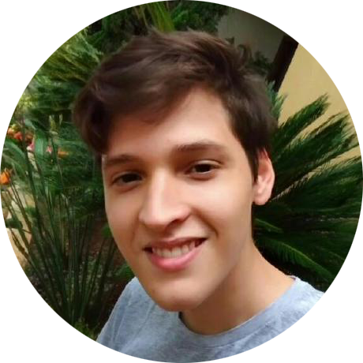

Sobre mim

Sou um aluno do primeiro semestre do curso de Ciências da Computação da Universidade de São Paulo, São Carlos.
Apaixonado por empreendedorismo e interessado nas áreas de Segurança da Informação e Processamento de Imagens.
Além de Python (<3), meus hobbies são Música, Cinema, Política e Astronomia.
O que me trouxe até aqui?
Como alguém que sempre gostou de aprender sobre tecnologia,
decidi fazer Ciências da Computação.
Durante o ensino fundamental e médio, fui parte do primeiro
time de robótica da escola como programador, o que me
motivou ainda mais a seguir esse curso durante a universidade.
No último ano do ensino médio, decidi que meu
próximo destino acadêmico seria a Universidade de São Paulo,
mais especificamente, o ICMC. Hoje, meu próximo objetivo é o ingresso
na ICMC Jr., a fim de encontrar grande aprendizado e altas doses de empreendedorismo.
Objetivos dentro da ICMC Jr
Acredito que, dentro da ICMC Jr.,
poderei adquirir sólidas noções de desenvolvimento Web e empreendedorismo.
Além disso, o Movimento Empresa Júnior é algo que me interessa dentro do
contexto de união entre aprendizado pessoal e evolução da atual geração
de empreendedores do país. Dessa forma, dedicarei-me a aprender sobre tais tópicos para,
assim, contribuir com os resultados da empresa e de seus clientes como um todo.
Obrigado!
Contatos: joao_pedro_mattos@usp.br


Desenvolvido por: João Pedro Rodrigues Mattos